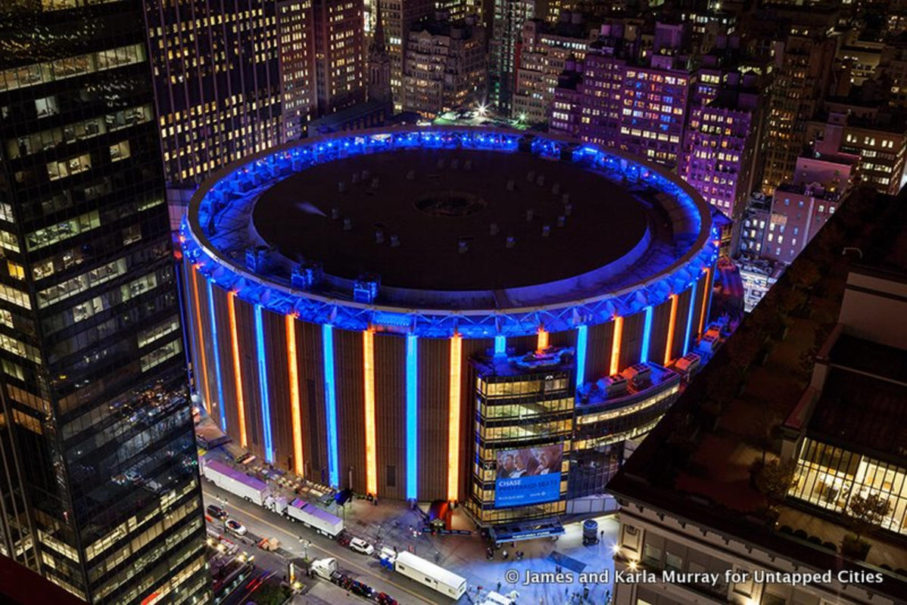
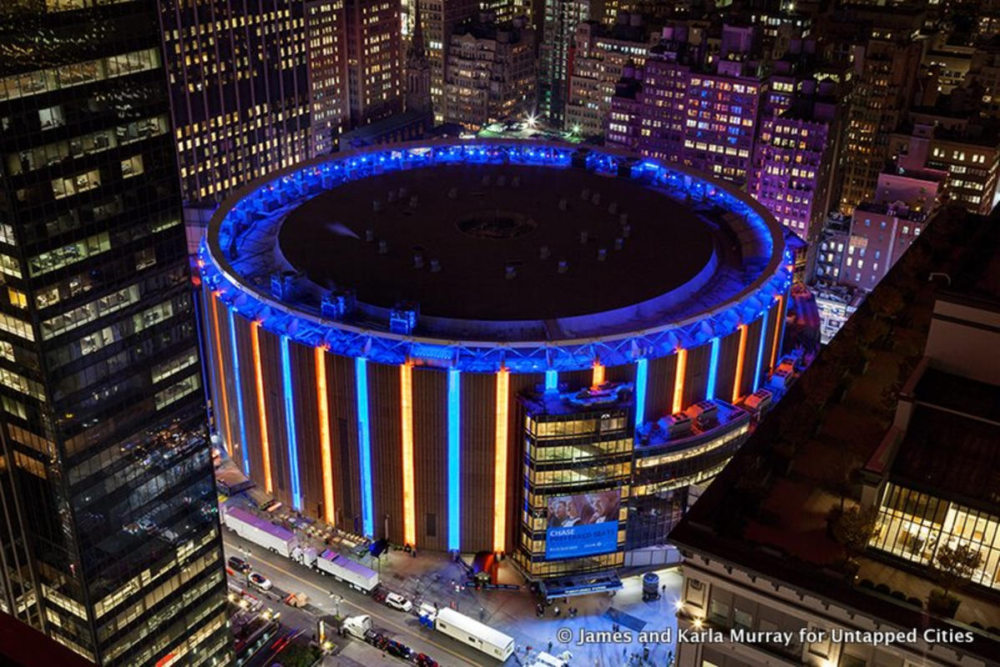

Pourquoi visiter New York?
Les building
Amateurs de building ? Allez à New York vous vous y sentirez tout petit. Un grand ville, aussi bien sur la superficie horizontale que sur la ligne verticale. Des hauteurs à perte de vue. C'est bien ça New York. Attention au torticoli à force de regarder vers le haut.
Multi-culturel
Plusieurs voyages de prévu ? Après New York plus besoin d'aller ailleurs. Vous y trouverez une multitude de cultures. A quelques mètres les uns des autres plusieurs quartiers ont adopté leur appartenance à une propre culture. De little italy à chinatown en passant par les harlems ou encore flushing, en une celle ville, une seule destination il vous est possible de gouter à des cultures diverses et nombreuses.
Le Sport
Fan de sport ? N'hésitez pas à profiter des lieux mythiques, voir légendaires que propose New York. Le Yankee Stadium, ou le Madison Square Garden sont des lieux où le sport et le show sportif ont une place de choix.
Des lieux cinématographiques
Vous avez toujours révé de retrouver les lieux où se déroulent certains lieux de films ou de séries? Et bien, la fontaine de Friends, les rues de Broadway, Times Square ou Central Park, tout ces lieux sont tous réunis dans une seule ville et c'est bien à New York.
Pour les New yorkais
Vous imaginez à quels points ça pourrait être cool d'avoir des amis new yorkais? Avoir un ami New new-yorkais vous permettra de faire de folles soirées dans son appartement (avec éventuellement ses colocataires). Il pourra vous monter New York sous un angle différent que celui des guides et ainsi vous faire découvrir des endroits magiques.
Les choses à voir
| Monuments | Description |
| Empire State Building | |
| Memorial Du 11 Septembre 2001 | |
| High Line | |
| La Statue De La Liberté | |
| Central Park | |
| Le Pont De Brooklyn | |
| Intrepid Sea-Air-Space Museum | |
| Top Of The Rock | |
| Wall Street | |
| Muséum D'Histoire Naturelle |
Les saisons sur New York
| Eté | |
| Automne | |
| Hiver | |
| Printemps |
Préparer avant de voyager
Avant de partir, il faut bien préparer ce voyage. En effet, la préparation est primordiale pour profiter un maximum à New York. Il ne faudrait pas que des contraintes viennent gâcher ce voyage qui s'annonce super.
Tout d'abord, pensez bien au vol et au logement. Comme pour tout voyage je ne vous apprends rien. Ensuite, organisez bien vos visites, vos déplacements. New York est une grande ville, et il y à de nombreuses choses à voir. Ajoutez à cela une liste de restaurant ou de lieu où manger et vous aurez un combo parfait pour passer un merveilleux séjour. Je vous assure que les burgers c'est le repas par excellence du new yorkais mais en une semaine manger non stop cette nourriture ça va vous faire bizarre, alors préparer une liste si vous voulez diversifier vos repas.
Spécialités
Culinaires d'abord, avec des quartiers aussi différents mis les uns à cotés des autres il n'est pas impossible de diversifier les repas, les mets, les collations, sans grandes difficultés.
Tips du Voyageur
- Une organisation des visites
- Préparer en amont une liste de lieux culinaires
-
Les endroits incontournables le sont.
Aucune déception - Aller sur la 5th Avenue et dépenser toutes nos économies
- Prenez le temps de vous balader
- Des chaussures confortables pour des heures de marches
- Les lieux cinématographiques sont fabuleux
- Une petite après-midi à vélo à Central Park, c'est génial
- Balade au bord de l'Hudson River
- Brooklyn est plus atypique, plus vrai, moins touristique. il faut y passer
- Un match de NBA ou MLB vaut le détour
- Longer Manhattan sub à bord d'un bateau est une bonne idée
Galerie


 
